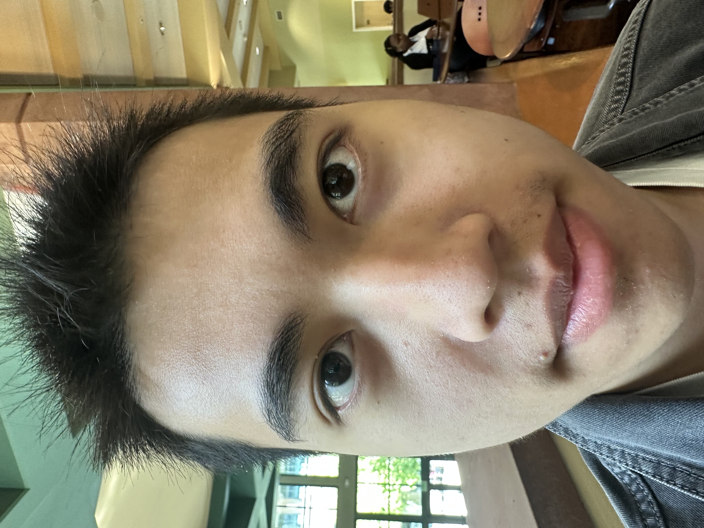
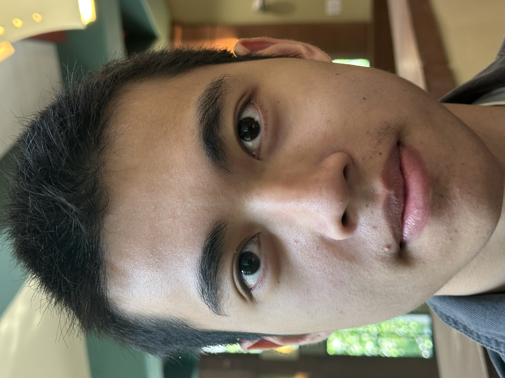

Selfie: The Wrong Way vs. The Right Way
 
In the close‑up photo on the left, my friend is holding the phone very close to my face. At that short distance the camera is using a wide‑angle focal length, which exaggerates features and causes more distortion to my face.For the image on the right my friend took a step back and used the camera’s zoom to fill the frame. The longer focal length flattens the perspective, so my facial features look more natural and evenly proportioned. Overall, shooting from farther away and zooming in produces a more flattering result.